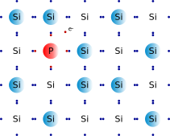
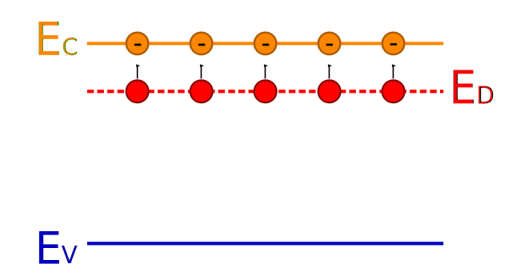
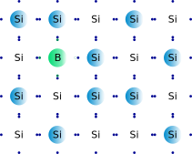
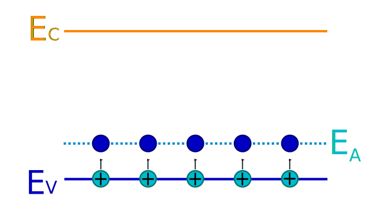

La théorie des bandes
- Rappeler ce que l’on appelle « structure du cortège électronique » pour un atome isolé.
Réponse
- Le cortège électronique d’un atome isolé est organisé en couches (et sous-couches) d’énergies possibles. On parle de quantification de l’énergie car leur nombre est infini mais pas continu (toutes les énergies ne sont pas possibles).
Les électrons qui constituent ce cortège appartiennent donc à l’une de ces couches d’énergie. - Les électrons statistiquement les plus proches du noyau occupent les premières couches (qui correspondent à l’interaction la plus grande avec le noyau) alors que les électrons statistiquement les plus éloignés interagissent moins avec le noyau et occupent des couches d’énergies moins grandes. Il existe donc une relation entre l’appartenance d’un électron à une couche d’énergie et sa distance moyenne au noyau.
- Le remplissage des couches électroniques suit des lois bien spécifiques :
- Les couches d’énergies sont remplies à partir des première couches ;
- Le nombre d’électrons dans chaque couche (ou sous-couche) est limité et dépend de la couche (ou sous-couche).
- Donner les structures électroniques des atomes de carbone (6 électrons dans le cortège électronique) et de chlore (17 électrons dans le cortège électronique).
Compter dans chaque cas le nombre d’électrons dans les couches internes et le nombre d’électrons dans la couche externe.
Réponse
-
Atome de carbone : 6 électrons qui se répartissent de la sorte dans le cortège électronique : $(K)^2(L)^4$ (si utilisation du formalisme des couches) ou $1s^2 2s^2 2p^2$ (si utilisation du formalisme des sous-couches).
Cet atome possède donc 2 électrons dans la couche interne $K$ et 4 électrons périphériques dans la couche externe $L$. -
Atome de chlore : 17 électrons qui se répartissent de la sorte dans le cortège électronique : $(K)^2(L)^8(M)^7$ (si utilisation du formalisme des couches) ou $1s^2 2s^2 2p^6 3s^2 2p^5$ (si utilisation du formalisme des sous-couches).
Cet atome possède donc 10 électrons dans les couches internes $K$ et $L$ et 7 électrons périphériques dans la couche externe $M$.
- Effectuer une analyse critique des 26 premières secondes du document. En particulier que penser d’une introduction aussi précoce de la notion d'« électron libre » ?
Réponse
Lors de ces 26 premières secondes, il n’est jamais précisé si l’on parle d’un atome de cuivre isolé ou si l’on parle d’un atome de cuivre dans un fil de cuivre.
Vous pourriez donc être amenés à penser que l’électron périphérique d’un atome de cuivre est toujours (que l’atome soit isolé ou pas) libre de quitter cet atome, ce qui n’est pas le cas.
La notion d’électron libre prend tout son sens pour expliquer le comportement conducteur du courant électrique, dans un fil électrique.
- Les niveaux d’énergies reste-t-ils tels quels lorsque les atomes ne sont plus isolés mais associés (lors de la formation de solides par exemple) ?
Réponse
-
Dans un atome isolé, l’énergie des électrons ne peut prendre que des valeurs discrètes et bien définies.
-
Dans un solide, aux interactions entre les noyaux et les électrons, il faut ajouter les interactions entre les noyaux. L’énergie d’un électron peut alors prendre n’importe quelle valeur à l’intérieur de certains intervalles. Cette propriété conduit à dire que le solide possède des bandes d’énergies permises, séparées par des bandes interdites.
-
Les électrons du solide se répartissent dans les bandes d’énergie autorisées ; cette répartition dépend de la température.
- Qu’appelle-t-on « bande de valence », « bande de conduction » ? Comment appelle-t-on l’énergie qui séparer la bande de valence de la bande de conduction ?
Réponse
- La dernière bande d’énergie complètement remplie par les électrons est appelée « bande de valence ».
- La bande d’énergie permise qui suit la bande de valence est appelée « bande de conduction ». Elle peut être vide ou partiellement remplie.
- L’énergie qui sépare la bande de valence de la bande de conduction est appelée le « gap » (fossé, interstice en anglais, bande interdite en français).
- La formation des molécules fait intervenir les électrons de valence des atomes. Par analogie essayer de préciser quel est le rôle des électrons situés dans la bande de valence. Pourquoi ne peuvent-ils pas participer à la conduction du courant électrique ?
Réponse
Les électrons de valence sont les électrons qui participent à la formation des doublets liants (liaisons) dans les molécules, ils assurent donc la cohésion des molécules. Par analogie, on peut penser que les électrons de la bande de valence contribuent à la cohésion du solide (entre atomes voisins). Ils ne peuvent donc pas participer à la conduction du courant électrique.
À l’opposé, les électrons de la bande de conduction ne participent pas à la cohésion du solide. Ce sont ces électrons qui participent à la conduction électrique.
- En conclusion, de quoi dépendent les propriétés électroniques d’un solide ?
Réponse
Les propriétés électroniques du solide dépendent donc essentiellement de la répartition des électrons dans les bandes de valence et de conduction, ainsi que de la valeur du gap entre ces deux bandes.
- Qu’est-ce qui caractérise un conducteur du point de vue de la théorie des bandes ?
Réponse
- Dans un conducteur, le plus haut niveau d’énergie occupé par les électrons (niveau de Fermi) se trouve dans la bande de conduction ; les bandes de conduction et de valence se chevauchent.
La bande de conduction est donc toujours partiellement occupée, même à une température de zéro kelvin. Un faible champ électrique peut mettre en mouvement les électrons et le solide est conducteur.
- Qu’est-ce qui caractérise un isolant du point de vue de la théorie des bandes ?
Réponse
Dans un isolant, le plus haut niveau d’énergie occupé par les électrons (niveau de Fermi) se trouve dans la bande interdite. La bande de conduction est donc vide et comme le gap est grand (de l’ordre de 10 eV) même une élévation de température ne permet à aucun électron de participer à la conduction.
- Qu’est-ce qui caractérise un semi-conducteur du point de vue de la théorie des bandes ?
Réponse
Dans un semi-conducteur, le plus haut niveau d’énergie occupé par les électrons (niveau de Fermi) se trouve dans la bande interdite. La bande de conduction est donc vide. Cependant, comme le gap n’est pas très grand (de l’ordre de 1 à 2 eV) une élévation de température ou une exposition à un rayonnement peut permettre à un électron de participer à la conduction (passage dans la bande de conduction).
- Qu’appelle-t-on dopage d’un semi-conducteur ? Combien de types de dopages sont possibles ?
Réponse
- Doper un semi-conducteur consiste à ajouter des « impuretés » (atomes) dans le semi-conducteur.
- Ces impuretés peuvent posséder plus d’électrons périphériques que nécessaire pour participer à la cohésion du solide.
On parle de dopage $N$. - Ces impuretés peuvent manquer d’électrons périphériques, ce qui crée des lacunes.
On parle de dopage $P$.
Cellule photovoltaïque
- Pourquoi dope-t-on le silicium pour créer une cellule photovoltaïque ?
Réponse
Le silicium est un semi-conducteur dont le gap 1,2 eV est assez faible. Une exposition à un rayonnement, même de faible énergie comme le visible, permet donc de faire passer des électrons dans la bande de conduction.
Cependant, rendre un matériau conducteur ne le transforme pas en générateur (objectif d’une cellule photovoltaïque). L’objectif du dopage est donc de générer une tension électrique.
- Quelle est la particularité de l’atome de phosphore, comparé à l’atome de silicium ?
Réponse
L’atome de phosphore se trouve, dans la classification périodique, dans la colonne qui suit celle dans laquelle se trouve le silicium. Il possède donc un électron périphérique supplémentaire par rapport à l’atome de silicium. Cet électron se trouve dans la bande de conduction.

L’introduction d’atomes donneurs d’électrons entraîne l’apparition d’un pseudo niveau d’énergie situé juste sous la bande de conduction. Ainsi, l’énergie nécessaire pour que les électrons passent dans la bande de conduction est bien plus facilement atteinte que dans un semiconducteur non dopé.

- Quelle est la particularité de l’atome de bore, comparé à l’atome de silicium ?
Réponse
L’atome de bore se trouve, dans la classification périodique, dans la colonne qui précède celle dans laquelle se trouve le silicium. Il possède donc un électron périphérique en moins par rapport à l’atome de silicium. Un trou apparaît donc dans la bande de valence.

Lors d’un dopage P, l’introduction d’atomes accepteurs d’électrons entraîne l’apparition d’un pseudo niveau situé au-dessus de la bande de valence. L’énergie à fournir aux électrons de valence pour passer sur ce niveau accepteur est plus petite, et le départ des électrons entraîne l’apparition de trous dans la bande de valence.

Activité du Livre Scolaire
- Dans une cellule photovoltaïque, d’où provient l’énergie nécessaire aux électrons des semi-conducteurs pour franchir le gap ?
Réponse
L’énergie permettant aux électrons de franchir le gap des semi-conducteurs provient de l’énergie radiative du Soleil, donc des photons.
- À l’intérieur d’une cellule à simple jonction, dans quel sens circulent les électrons ?
Réponse
Les électrons se déplacent de la partie dopée de type $N$ à la partie dopée de type $P$ du semi-conducteur, en passant par le circuit électrique extérieur.
- Expliquer le fonctionnement d’une cellule photovoltaïque.
Réponse
Les photons de la lumière, s’ils ont suffisamment d’énergie, peuvent arracher des électrons aux atomes de sicilicium de la jonction $PN$. Ces électrons sont accélérés vers la couche $N$ par le champ électrique. Parallèlement, des électrons de la couche $P$ diffusent de façon à compenser le trou laissé par les électrons qui ont quitté la jonction $PN$. Un déficit d’électrons se déplace donc dans le matériau dopé $P$. Si on connecte les matériaux $N$ et $P$ par un circuit électrique, un courant électrique apparaît de façon à compenser le déficit d’électrons dans le matériau $P$.
- Un bon semi-conducteur pour des panneaux photovoltaïques doit avoir une énergie de gap ni trop basse ni trop élevée. Le meilleur compromis est obtenu en choisissant des semi-conducteurs ayant un gap compris entre 1 et 1,7 eV. Identifier les semi-conducteurs qui répondent le mieux à ces critères.
Réponse
Les semi-conducteurs ayant un gap compris entre 1 et 1,7 eV sont Si, InP, a-Si, GaAS et CdTe.
- Identifier le semi-conducteur qui possède la plus large bande d’absorption du rayonnement. Pourquoi n’est-il pas utilisé à la place du silicium pour fabriquer la plupart des cellules photovoltaïques à simple jonction ?
Réponse
Le semi-conducteur ayant la plus large bande d’absorption est Ge (germanium). Il n’est pas utilisé à la place du silicium car le rendement d’une cellule qui l’utiliserait serait trop faible et parce qu’il coûte 4 fois plus cher que le silicium.
- Identifier la partie du spectre solaire absorbée par les semi-conducteurs.
Réponse
Les semi-conducteurs absorbent essentiellement dans le visible (380 nm-780 nm) et dans l’infrarouge jusqu’à 1 400 nm pour le germanium par exemple. Ils absorbent peu dans les ultraviolets (jusqu’à 250 nm environ).
- L’une des possibilités explorées pour augmenter le rendement des cellules photovoltaïques est la cellule multi-jonctions, un empilement de deux ou trois semi-conducteurs différents. Une cellule multi-jonction est fabriquée à partir des trois semi-conducteurs suivants : InP, GaAs et Ge. Rédiger un court paragraphe pour expliquer l’intérêt de ce choix.
Réponse
-Les photons ayant une énergie inférieure au gap ne peuvent pas être absorbés par le semi-conducteur et ne contribuent donc pas à la génération d’électricité.
- Les photons d’énergie supérieure au gap provoquent un échauffement du matériau par mécanisme de thermalisation.
- En superposant judicieusement des semi-conducteurs de gaps différents, on peut mieux exploiter le spectre solaire et ainsi augmenter l’efficacité des panneaux photovoltaïques.
Une cellule multi-jonctions permet donc d’augmenter le rendement. Le rendement record de conversion photovoltaïque est ainsi de 47,1 %